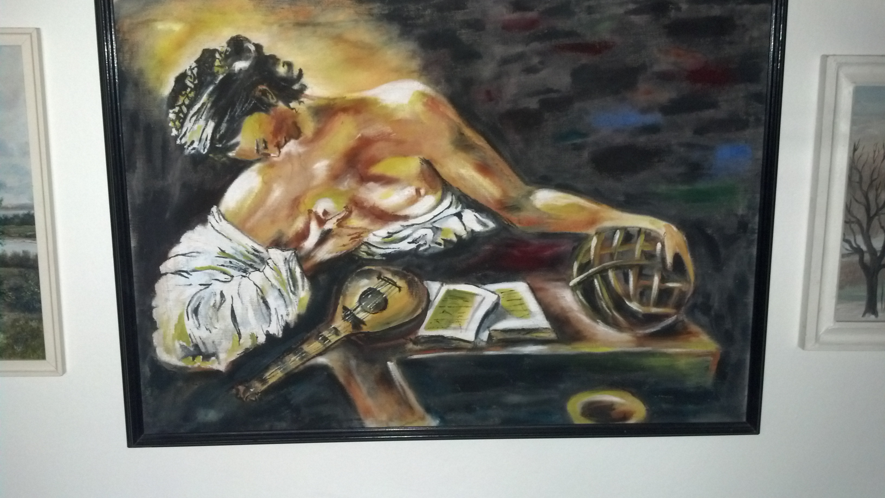
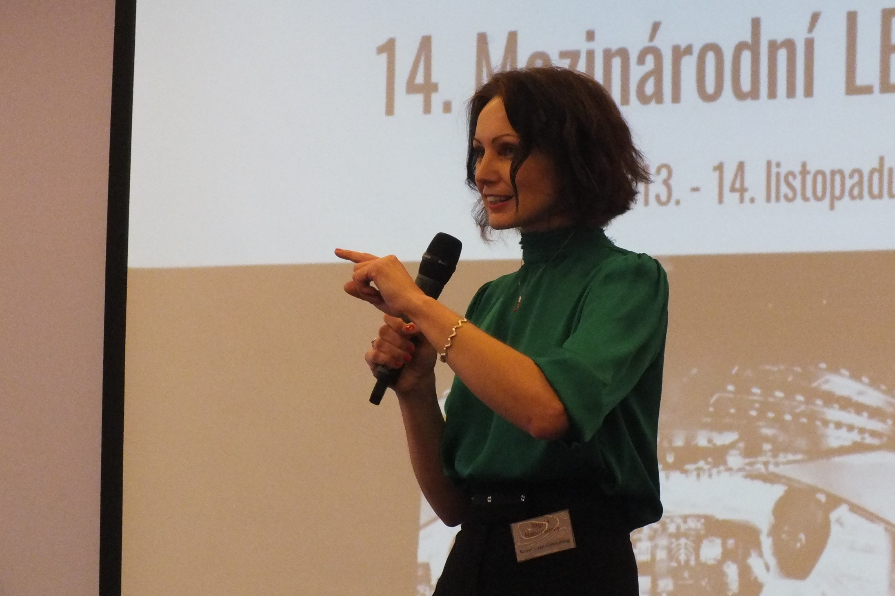
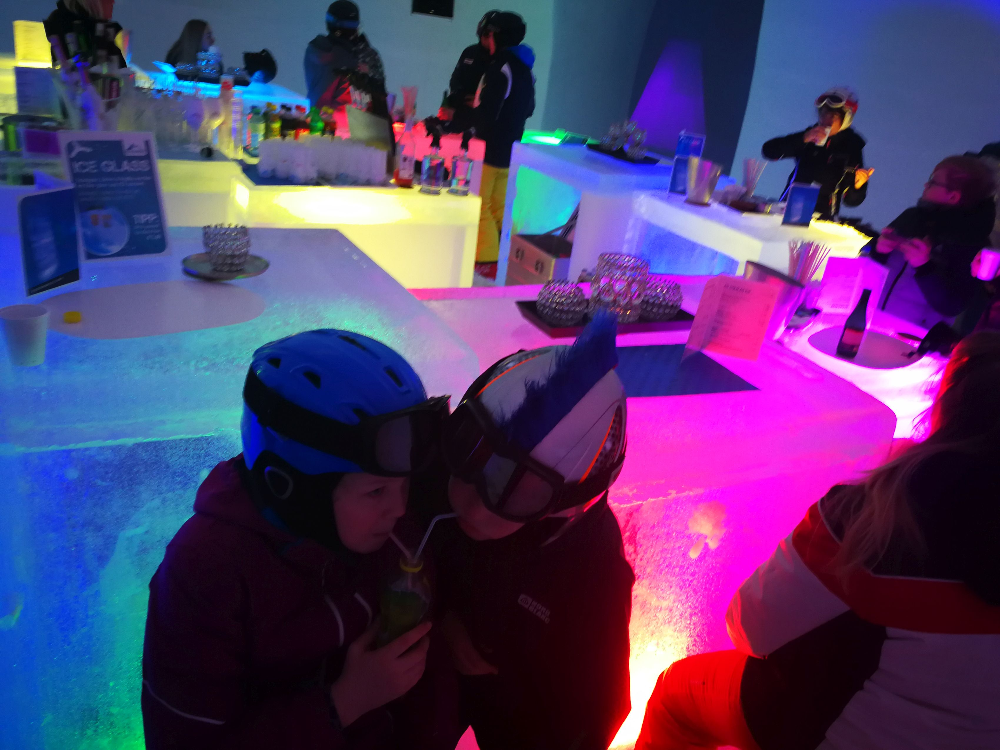
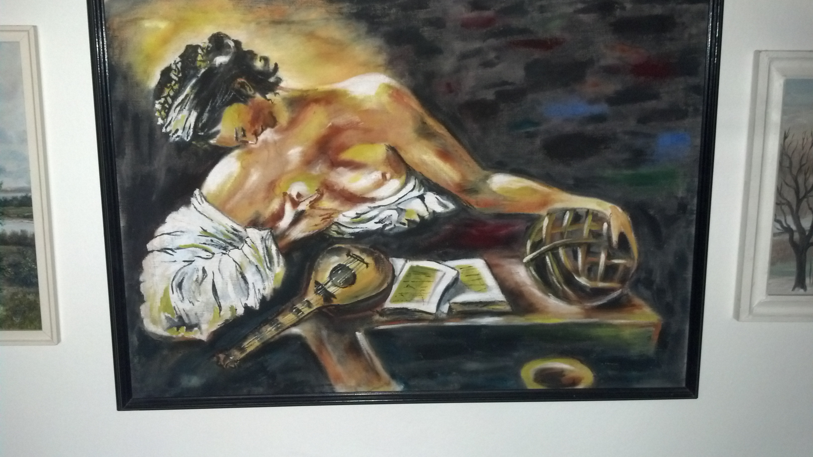
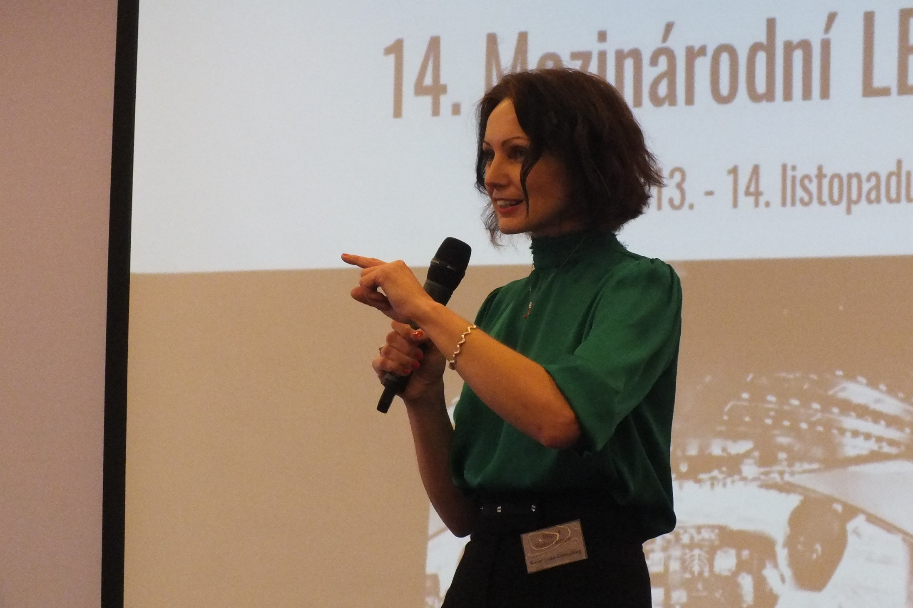
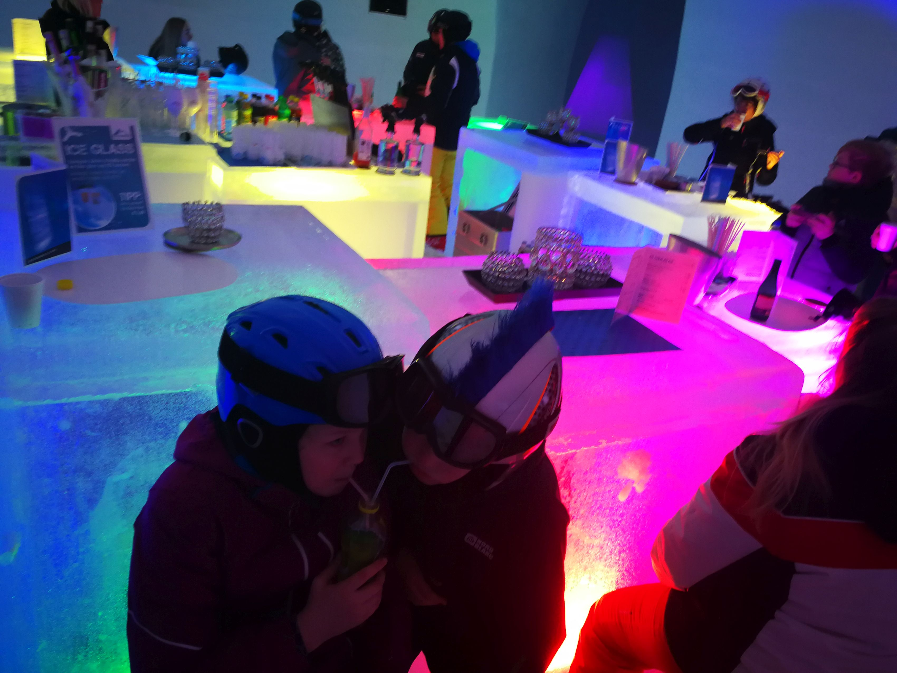

Ingrid
 





Mám ráda dobré capuccino a malování (tužka, barvy..cokoliv), taky mne hodně baví moderování...a samozřejmě si už neumím představit život bez svých dětí :-)
Pocházím z malého městečka na východním Slovensku. Vystudovala jsem Strojníckou fakultu Technické univerzity v Košicích a už 7 let funguji na volné noze: jako konzultant a Business Development Manager.
,,Lidské štěstí, to je taková šňůrka, na kterou navlékáme malé korálky, taková malá štěstí: Čím jsou drobnější a čím je jich víc, tím je to štěstí větší."(Jan Werich)